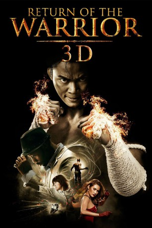

#5996 Return of the Warrior
Alternativ: Warrior King 2 (Englischer Titel)
 
 IMDB-Wertung: 5.3 / 10
IMDB-Wertung: 5.3 / 10  Metascore: 0
Metascore: 0 
Kham ist in sein Heimatdorf zurückgekehrt, wo Wilderer den geliebten Elefanten entführen wollen, dabei den Direktor des Geheges ermorden und ihm die Tat in die Schuhe schieben. Auf der Flucht vor der Polizei und den beiden fuchsteufelswild auf Rache sinnenden Zwillingsnichten des Toten taucht Kham in der Großstadt unter, wo ihn US-Gangsterboss LC für illegale Untergrundkämpfe gewinnen will. Als Kham sich weigert, hetzt LC die tödliche Twenty sowie seinen Topkämpfer No. 2 auf ihn. Denn er beabsichtigt, Kham in einem abgekarteten Attentatsplan einzusetzen.
Jahr: 2013
Dauer: 104 Minuten
FSK: 18
Land: Thailand Studio: Splendid FilmTonspuren:
Untertitel: Deutsch,
Auflösung: 720p (1280x544) Größe: 3174 MB
Genre: Action
Regisseur: Prachya Pinkaew
Drehbuch: John Wrathall
Soundtrack:
Darsteller:
 Tony Jaa als Kham
Tony Jaa als Kham RZA als LC
RZA als LC Petchtai Wongkamlao als Mark
Petchtai Wongkamlao als Mark JeeJa Yanin als Ping Ping
JeeJa Yanin als Ping Ping- Marrese Crump als No. 2
- Yayaying Rhatha Phongam als No. 20
- Jawed El Berni als No. 85
- Charles Onken als Interpol
- Eddie Ruiz als Latino Fighter #1 , uncredited
- Kazu Patrick Tang als No. 18
- David Ismalone als No. 24
- Theerada Kittisiriprasert als Sue Sue
- Boonsong Nakphoo als No. 14
- Sophon Phoonsawat als No. 45
- Anton Kalinitchenko als No. 31
- Solatorn Lungluang als Kham's Father
- Patipol Sochada als Young Kham
- Adinan Buntanaporn als Suchart
- Autsadawong Boonyarat als Policeman in Suchart's House
- Nalith Vachirapornprut als Policeman in Suchart's House
- Somnuk Srireunruang als Piak's Father
- Nokhrin Hunprasit als Piak
- Pakon Sroiphuang als Pond
- Santipap Tabngen als Mud
- Monaiya Tharasak als Agent
- Leen Theen Villagers als Kham's Neighbors
- Jean Woof als Interpol Chief
- Tom Stanton als Interpol
- Ulrich Klug als Interpol
- Peter Litchfield als Interpol
- Lorenz Roth als Interpol
- Benchaporn Punyaying als Crime Scene Investigator
- Pichai Pipattadorn als Sia Oun
- Jatupol Namjaitheangtram als Ten-Wheeled Truck Driver
- Pongsit Pisittakarn als The Motopunk with Helmet
- Nhui Sandang als Motopunk Who Captures Ping Ping
- Cahantouch Bunnak als Motopunk Who Captures Ping Ping
- Patom Poorahong als Motopunk Who Captures Ping Ping
- Narut Pomprapa als Motopunk
- Noppadon Sorhirun als Motopunk
- Watcharakorn Luengchampa als Motopunk
- A. Nurak Paniuem als Motopunk
- Parviz Shoughian Mokhtor als Katana Leader
- Maher Hasan als Katana Commander in Chief
- Kefi Adwen als Katana Commissioner
- Zargham Borojeni als Katana Commissioner
- Eakasit Thairaat als Katana Commissioner
- Janepoj Kuarjirattikan als Aid-De-Camp
- Mars Thomanefz als Aid-De-Camp
- Hugh Brammar als General
Datei: X:\FSK18-Eastern-Collections\Ong Bak\Return of the Warrior (2013, FSK18, 1280x544).mkv seit 18.04.2017
Festplatte: FSK18
 Es gibt insgesamt 8 Filme in der Gruppe 'FSK18-Eastern-Collections\Ong Bak'
Es gibt insgesamt 8 Filme in der Gruppe 'FSK18-Eastern-Collections\Ong Bak'